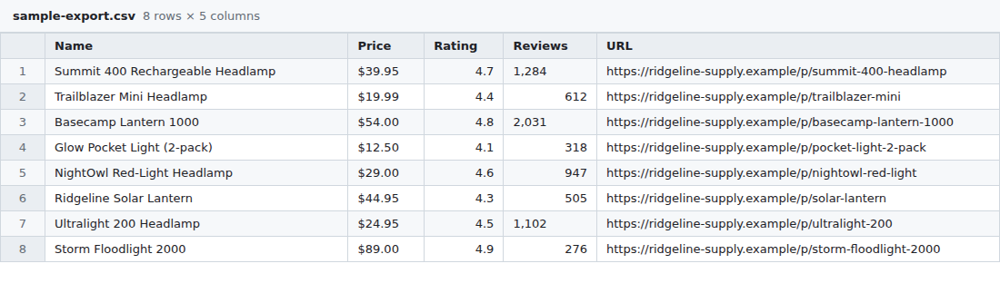

A Chrome extension that turns the page you're on into a clean CSV table or a short summary, using your own OpenAI, Anthropic or OpenRouter API key. No account, no server, no tracking. By Breezy Development.
